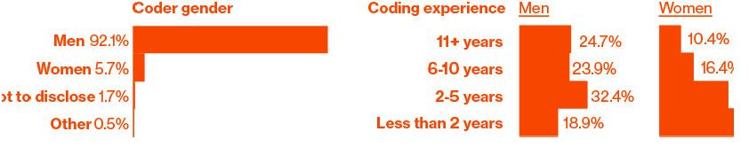

Conferences! The website Lanyrd lists hundreds of technology conferences for June 2015. There's an event for software testers in Chicago, a Twitter conference in São Paulo, and one on enterprise content management in Amsterdam. In New York alone there's the Big Apple Scrum Day, the Razorfish Tech Summit, an entrepreneurship boot camp for veterans, a conference dedicated to digital mapping, many conferences for digital marketers, one dedicated to Node.js, one for Ruby, and one for Scala (these are programming languages), a couple of breakfasts, a conference for cascading style sheets, one for text analytics, and something called the Employee Engagement Awards.
Tech conferences look like you'd expect. Tons of people at a Sheraton, keynote in Ballroom D. Or enormous streams of people wandering through South by Southwest in Austin. People come together in the dozens or thousands and attend panels, ostensibly to learn; they attend presentations and brush up their skills, but there's a secondary conference function, one of acculturation. You go to a technology conference to affirm your tribal identity, to transfer out of the throng of dilettantes and into the zone of the professional. You pick up swag and talk to vendors, if that's your thing.
Technology conferences are where primate dynamics can be fully displayed, where relationships of power and hierarchy can be established. There are keynote speakers—often the people who created the technology at hand or crafted a given language. There are the regular speakers, often paid not at all or in airfare, who present some idea or technique or approach. Then there are the panels, where a group of people are lined up in a row and forced into some semblance of interaction while the audience checks its e-mail.
I'm a little down on panels. They tend to drift. I'm not sure why they exist.
Here's the other thing about technology conferences: There has been much sexual harassment and much sexist content in conferences. Which is stupid, because computers are dumb rocks lacking genitalia, but there you have it.
Women in software, having had enough, started to write it up, post to blogs. Other women did the same. The problem is pervasive: There are a lot of conferences, and there have been many reports of harassing behavior. The language Ruby, the preferred language for startup bros, developed the worst reputation. At a Ruby conference in 2009, someone gave a talk subtitled "Perform Like a Pr0n Star," with sexy slides. That was dispiriting. There have been criminal incidents, too.
Conferences began to develop codes of conduct, rules and algorithms for people (men, really) to follow.
If you are subject to or witness unacceptable behavior, or have any
other concerns, please notify a community organizer as soon as
possible …
— Burlington Ruby Conference
php[architect] is dedicated to providing a harassment-free event
experience for everyone and will not tolerate harassment or
offensive behavior in any form.
— php[architect]
The Atlanta Java Users Group (AJUG) is dedicated to providing an
outstanding conference experience for all attendees, speakers,
sponsors, volunteers, and organizers involved in DevNexus
(GeekyNerds) regardless of gender, sexual orientation, disability,
physical appearance, body size, race, religion, financial status, hair
color (or hair amount), platform preference, or text editor of choice.
— devnexus
When people started talking about conference behavior, they also began to talk about the larger problems of programming culture. This was always an issue, but the conference issues gave people a point of common reference. Why were there so many men in this field? Why do they behave so strangely? Why is it so hard for them to be in groups with female programmers and behave in a typical, adult way?
"I go to work and I stick out like a sore thumb. I have been mistaken for an administrative assistant more than once. I have been asked if I was physical security (despite security wearing very distinctive uniforms)," wrote Erica Joy Baker on Medium.com who has worked, among other places, at Google.
“Always the only woman in the meeting, often the first—the first female R&D engineer, first female project lead, first female software team lead —in the companies I worked for,” wrote another woman in Fast Company magazine.
Fewer than a fifth of undergraduate degrees in computer science awarded in 2012 went to women, according to the National Center for Women & Information Technology. Less than 30 percent of the people in computing are women. And the number of women in computing has fallen since the 1980s, even as the market for their skills has expanded. The pipeline is a huge problem. And yet it's not unsolvable. I've met managers who have built perfectly functional large teams that are more than half female coders. Places such as the handicrafts e-commerce site Etsy have made a particular effort to develop educational programs and mentorship programs. Organizations such as the not-for-profit Girl Develop It teach women, and just women, how to create software.
It's all happening very late in the boom, though. In 2014 some companies began to release diversity reports for their programming teams. It wasn't a popular practice, but it was revealing. Intel is 23 percent female; Yahoo! is 37 percent. Apple, Facebook, Google, Twitter, and Microsoft are all around 30 percent. These numbers are for the whole companies, not only programmers. That's a lot of women who didn't get stock options. The numbers of people who aren't white or Asian are worse yet. Apple just gave $50 million to fund diversity initiatives, equivalent to 0.007 percent of its market cap. Intel has a $300 million diversity project.
The average programmer is moderately diligent, capable of basic mathematics, has a working knowledge of one or more programming languages, and can communicate what he or she is doing to management and his or her peers. Given that a significant number of women work as journalists and editors, perform surgery, run companies, manage small businesses, and use spreadsheets, that a few even serve on the Supreme Court, and that we are no longer surprised to find women working as accountants, professors, statisticians, or project managers, it's hard to imagine that they can't write JavaScript. Programming, despite the hype and the self-serving fantasies of programmers the world over, isn't the most intellectually demanding task imaginable.
Which leads one to the inescapable conclusion: The problem with women in technology isn't the women.
Apprently, tech conference is a place for programmers to communicate and brush up their skills. However, another purpose for programmers is to enter into the professional social circle and affirm their identity as a "professional".
Technology conference is a man-dominant field.
Sexual harassment of women and sexist content is not rare in conferences
The numbers of female coders are lesser than males no matter in terms of undergraduate degrees, company teams, indicating female gets fewer opportunities in both education and in the workplace.
Since women are capable of doing many jobs, they also can write code as men do. It's not the women's fault.